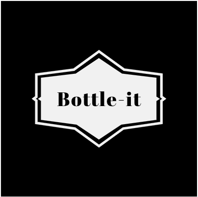

Skills
- HTML
- CSS
- JavaScript
- Angular
- React.js
- NodeJS
- MongoD
- Web APIs
- GitHub
- Express
- Webpack
- Regex
- jQuery
- Bulma
Hard Skills
- Time Management
- Presentation
- Team-Work
- Listening
- Communication management
- Project Management
- Visual communication
Soft Skills
- RESTful
- Responsive web design
- TDD
- MVC Framework
- Agile
- Trello
- CRUD methods
Methodologies
- Auto CAD
- Adobe professional
Other skills
Projects
JavaScript Game

The idea of the game was to create a memorisation game that is fun, teaching coders fun HTML colour names (e.g. Goldenrod or Gainsboro), which they can use as placeholder to inject some fun into day-to-day coding (e.g. using Crimson instead of Red).
Movie Wisdom

A fan site to collect quirky one-line wisdom quotes from movies. The idea is that well scripted movie quotes are a powerful tool and can have lasting impact.
Sinatra fans

A fan site for traditional jazz lovers to celebrate Frank Sinatra and share musical tracks. This is a secure web application which allows logged in users to create fan albums and add soundcloud tracks for all to listen
Bottle-it
Ever wondered why in social circles there is such a lack in diversity of soft drinks on offer especially at drinking establishments but sometimes one stumbles across a rare find which is on offer. From this the idea of bottle-it was born to collect and celebrate hipster soft drink finds.
Throughout my 420 hours of tuition at General Assembly, I most enjoyed the most working on the Frank Sinatra fans project:
- Developing a meaningful brand.
- Creating user stories and consulting UX designer's for feedback
- Time bound - 6 days sprint making to complete the web app, making good use of common industry practices (e.g. Trello and Scrum) to execute.
I created a web application model similar to Youtube's content consumption model (i.e. non-logged in users can enjoy music covers and see tribute concerts listings).
Seeking opportunities
I love the idea of working in a agile environment, with a good team. I would like to work with people to jointly host brainstorming and trying to keep it useful and fun. I really enjoy the professionalism and depth of this industry.